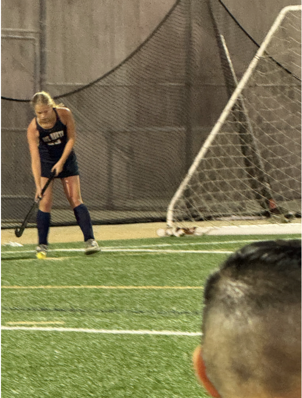

My name is Carey and I am a Morgan’s Message Ambassador. My entire life I had viewed sports as trivial, playing whatever I chose year-by-year as it was a requirement in my home to be involved in some sort of activity. I did not know what it felt like to be passionate about your sport until I reached high school and began playing field hockey. A brand new sport to me, surrounded by my friends and supportive coaches all at my school. It was as overwhelming as it was exciting. I had never felt drive or love for a sport in the same way I did for field hockey the fall of my freshman year. This drastic change in my priorities in my life had its negative effects as well. I quickly developed the belief that I wasn’t a fraction of as good as my teammates, and struggled with feeling like I deserved to be in the same places they were. Finding myself starting felt unfair to those around me, I seriously doubted my talents and capabilities due to the fact I had never even considered them before. Putting in effort during practice and training during the off season felt like requirements, I couldn’t even be proud of myself after a game I played well in or a practice I came home tired from. This was one of the main reasons I wanted to become a Morgan’s Message ambassador. The negative thoughts I had while playing field hockey, along with the imposter syndrome I faced coupled with making varsity beach volleyball as a freshman completely derailed my drive for sports. Learning to appreciate my hard work while simultaneously leaning on my teammates and coaches to help me grow has been a long process, but the end result made the effort worth it, and I strongly desire to help other people struggling with the same issues grow out of their doubts into confidence.
